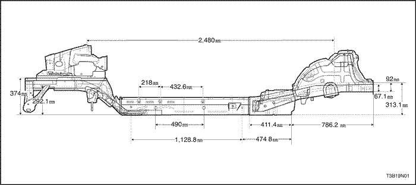
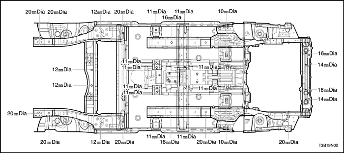
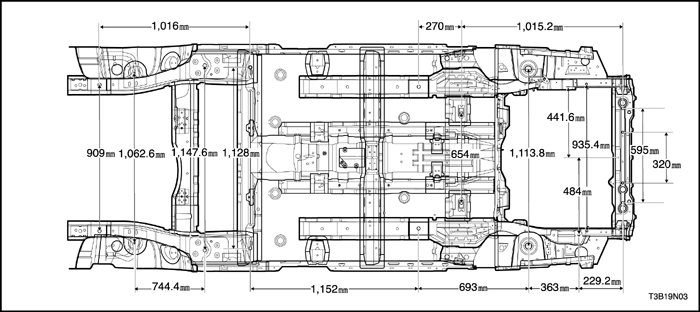
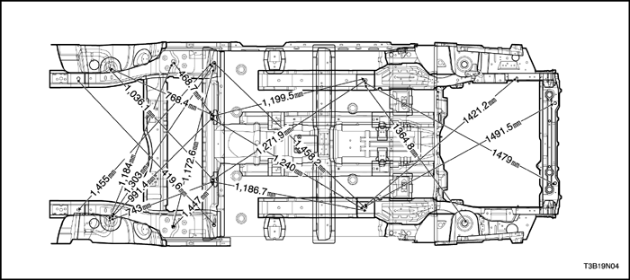
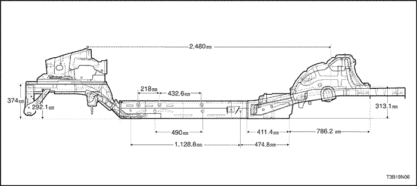
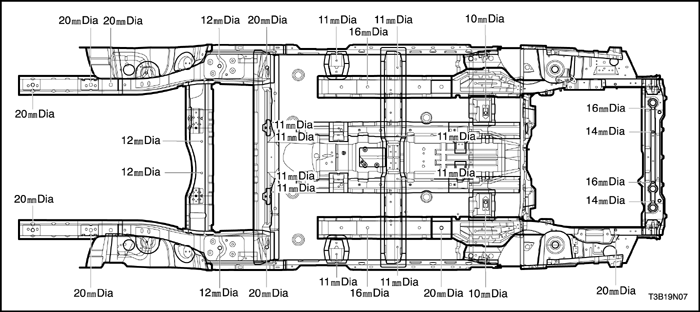
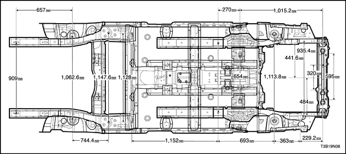
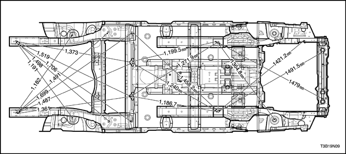
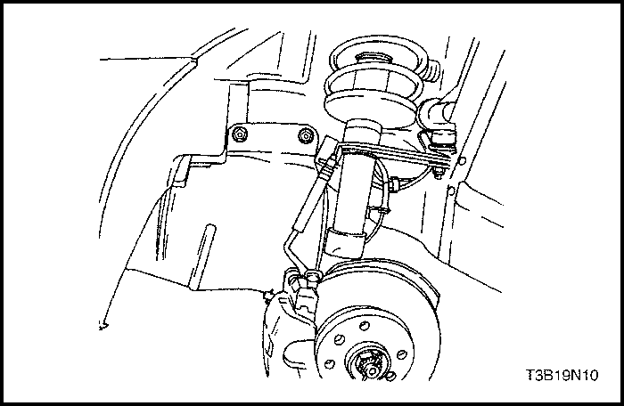

SECCIÓN 9N
BASTIDOR Y CHASIS INFERIOR
ESPECIFICACIONES
Especificaciones de apriete
Aplicación | N•m | Lb-Ft | Lb-pulgada |
Pernos de la cubierta inferior del motor | 3.5 | - | 31 |
Pernos de la cubierta inferior del motor | 3.5 | - | 31 |
Dimensiones del chasis inferior (hatchback)






Dimensiones del chasis inferior (Notchback)




MANTENIMIENTO Y REPARACIÓN
Servicio en el vehículo
Comprobación de la alineación
Se utiliza un calibre en paralelo como método preciso para determinar la alineación del chasis inferior. El conjunto de calibre en paralelo se utiliza para llevar a cabo las comprobaciones de medición recomendadas debe incluir un puntero vertical capaz de marcar los 457 mm (18 pulgadas).
Pueden Con un calibre en paralelo pueden realizarse dos tipos de mediciones: mediciones directas punto a punto y mediciones calculadas en un plano horizontal (línea de referencia) paralelas al chasis inferior. Las mediciones punto a punto generalmente se realizan en las piezas del compartimento de la dirección y suspensión del motor y simplemente requieren que los punteros verticales se igualen.
Para las mediciones de plano horizontal, los punteros verticales deben configurarse según se especifican para cada punto que va a medirse.
Los taladros dimensiones a calibre se miden al centro del propio taladro y al rás con la superficie metálica adyacente, a menos que se especifique de otro modo. Se recomienda que las medidas diagonales con respecto a la carrocería transversal se comprueben en ambos lados para verificar la precisión dimensional del chasis inferior del vehículo.
Aislantes de cárter inferior
Los aislantes de cárter inferior se han diseñado para resistir las altas temperaturas del cárter inferior que se derivan del uso del convertidor catalítico del sistema de escape. Por ello, cuando se realice el servicio del vehículo es importante que cualquier aislante que pudiera haber sido desplazado o quitado, vuelva a ser instalado en su ubicación original y en la secuencia de montaje correcta. Además, si fuera necesario sustituir un aislante, use únicamente el aislante especificado para esa ubicación en el cárter inferior.
Cuando se realice un servicio, o se sustituyan los aislamientos interiores, siga estas instrucciones.
- Instale los aislamientos en la posición original y en la secuencia correcta. Una a tope las piezas para evitar los espacios vacíos o la superposición de las mismas.
- Si fuera necesario sustituir un aislante, use únicamente el aislante especificado.
- Use la pieza original para determinar la cantidad de material de repuesto necesario requerido y como plantilla para cortar y colocar la nueva pieza en el cárter inferior.
- Cuando instale el aislamiento, no agrande los recortes ni los taladros que se utilizan para la sujeción de las piezas interiores, como p. ej. el tablero de instrumentos o la consola de suelo.
- Lleve el cable de conexión de la carrocería transversal de piezas interiores sobre los aislantes de cárter inferior. Sujételo en la ubicación original.
- No aplique aislantes acústicos pulverizados ni adhesivos del tapizado en la parte superior del cárter inferior en la zona directamente encima del convertidor catalítico o el silenciador.
Cualquier aislante usando en una reparación de servicio o sustitución debe ser del mismo grosor, tamaño y estar ubicado en el mismo lugar que la instalación original en el vehículo.

Cubiertas inferiores del motor
Procedimiento de desmontaje
- Eleve y apoye debidamente el vehículo.
- Quite la rueda delantera. Consultar la sección 2E, neumáticos y ruedas.
- Quite las tuercas y pernos y la cubierta inferior del motor.
Procedimiento de Instalación
- Instale la cubierta inferior del motor con los pernos y las tuercas.
Apretar
Apriete los pernos de la cubierta inferior del motor a 3.5 N•m ((31 Lb-pulgada).
Apriete las tuercas de la cubierta inferior del motor a 3.5 N•m (31 Lb-pulgada).
- Instale la rueda delantera. Consultar la sección 2E, neumáticos y ruedas.
- Instale la rueda delantera. Consultar la sección 2E, neumáticos y ruedas.
- Baje el vehículo.
- Baje el vehículo.
DESCRIPCIÓN GENERAL Y FUNCIONAMIENTO DEL SISTEMA
Construcción de carrocería general
Este vehículo se construyó con una carrocería unitaria que incorpora guías laterales integrales del bastidor delantero y trasero.
Los brazos de control inferiores de la suspensión delantera están apernados y retenidos mediante soportes, uno en el lado derecho y el otro en el izquierdo. Los soportes del brazo de control inferior de la suspensión delantera se fijan al chasis inferior con tres pernos en dos lugares. El motor se aperna a las guías laterales integrales delanteras. Las torres del puntal de suspensión deben ser dimensionalmente correctas en relación con el resto del chasis inferior para mantener los ángulos del puntal de suspensión y roldana / caída especificados.
Debido a que las partes individuales del chasis inferior contribuyen directamente a la resistencia total de la carrocería, es esencial observar las técnicas apropiadas de soldadura durante las operaciones de reparación de servicio. Las piezas del chasis inferior deben sellarse y protegerse de la oxidación adecuadamente siempre que las operaciones de reparación de la carrocería destruyan o dañen el sellado o protección contra la oxidación originales. Cuando se protejan contra la oxidación piezas del chasis inferior críticas, utilice un tipo de imprimación de secado al aire de buena calidad, como por ejemplo un cromado resistente a la corrosión o material equivalente. Las imprimaciones/acabados superficiales de tipo combinado no están recomendados.
Cubiertas inferiores del motor
Las cubiertas inferiores del motor son piezas moldeadas de plástico que sirven como escudos para las partes inferiores del motor. Las cubiertas ayudan a proteger el motor de pequeñas piedras, gravilla y otros objetos que, de otro modo entrarían en contacto con el motor durante las condiciones normales de conducción.